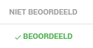
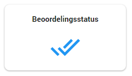
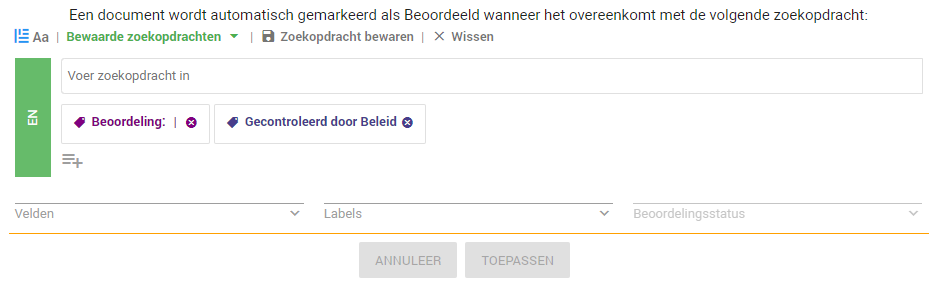

De beoordelingsstatus bepaalt wanneer een document volgens het systeem is behandeld. Dit valt per document terug te zien naast de bestandsnaam of in de documentenlijst wanneer deze kolom is geselecteerd in de gepersonaliseerde weergave.

U kunt zelf instellen wanneer een document wordt gezien als beoordeeld. U gaat hiervoor naar het Configuratie dashboard en klikt vervolgens op de tegel Beoordelingsstatus.

Hier kunt u vervolgens instellen wanneer een document als beoordeeld beschouwd dient te worden. Dit gaat door middel van een zoekvraag, indien het document aan de zoekvraag voldoet wordt het beschouwd als beoordeeld.

Wanneer een document van het label Beoordeling en Gecontroleerd door Beleid is voorzien wordt deze aangemerkt als beoordeeld. U kunt hier zelf indien gewenst aanpassingen in aanbrengen.